conductor
REUSED (41 KB)
Photorealistic adult educational vocabulary card. Concept: "conductor". Close-up of an orchestra conductor's hand in a sharp formal black suit sleeve holding an elegant white baton poised gracefully over a dark wooden music stand with sheet music score. Symphony hall concert stage in soft-focus background with warm ambient stage lighting. No women. Strictly no readable text, letters, words, sheet notation titles, or watermarks. Aspect ratio 1:1 square.
bank-hero
REUSED (138 KB)
High-end architectural photography of a prestigious modern bank interior grand lobby. Polished marble flooring, tall classical stone columns, elegant teller counters with brass and dark wood accents, soft warm overhead lighting, quiet professional financial institution hall. Strictly human-free composition. Strictly no readable text, words, letters, numbers, signs, logos, or watermarks. Wide landscape 4:3.
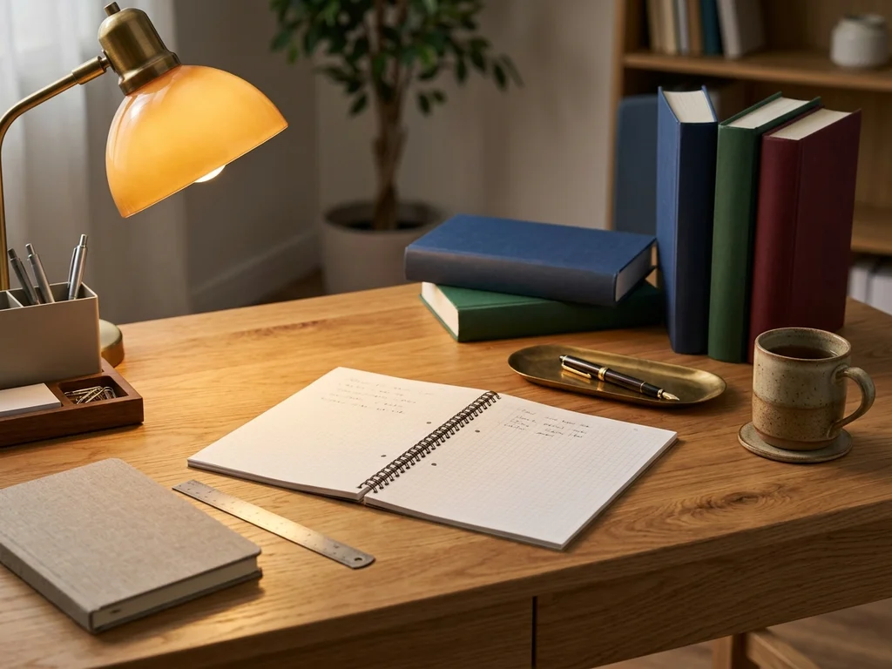
revision-5-hero
REUSED (67 KB)
A neat, organized adult study desk for structured revision. Open notebooks, clean reference books with blank spines, a fine fountain pen resting on a brass tray, ceramic tea mug, and warm desk lamp casting focused light on oak wood. Strictly human-free composition. Strictly no readable text, letters, words, numerals, or watermarks. Clean modern educational photography. Aspect ratio 4:3.
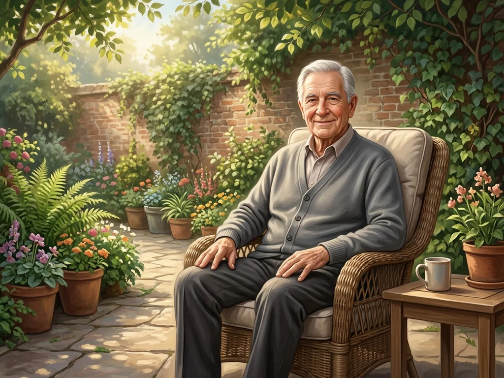
sentence-seventy
REUSED (164 KB)
Realistic adult educational illustration. A dignified elderly grandfather with silver hair, neat grey cardigan, and a warm kind smile sitting in a comfortable armchair on a sunlit garden patio, enjoying fresh morning air. Warm soft natural lighting. No women. Strictly no numbers, numerals, words, letters, labels, or watermarks anywhere in the image. Aspect ratio 4:3.
sunscreen-bottle
REUSED (39 KB)
A clean, modern bathroom marble vanity counter with a sleek amber pump bottle of thick white sunscreen lotion, resting next to a small natural sea shell and fresh white hand towel. Soft morning sunlight. Strictly human-free composition. Strictly no readable brand names, labels, letters, words, or watermarks on the bottle or background. Aspect ratio 4:3.
hand-soap-dispenser
REUSED (31 KB)
A minimalist clear glass soap dispenser filled with golden liquid hand soap resting beside a modern white ceramic sink basin and chrome faucet with gentle water droplets. Clean bright bathroom interior. Strictly human-free composition. Strictly no text, labels, brand names, letters, or watermarks on the dispenser. Aspect ratio 4:3.
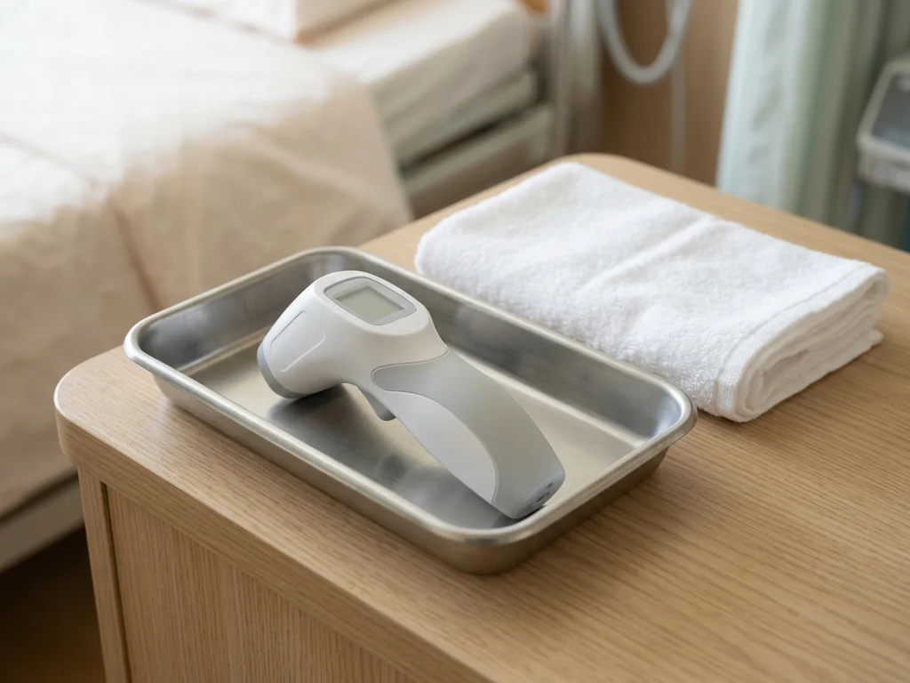
body-thermometer
REUSED (45 KB)
A modern medical digital forehead thermometer resting neatly in a clean clinical tray beside a folded soft cotton towel on a bedside table. Soft indoor ambient lighting. Strictly human-free composition. No numbers or text on the display. No words, letters, or watermarks. Aspect ratio 4:3.
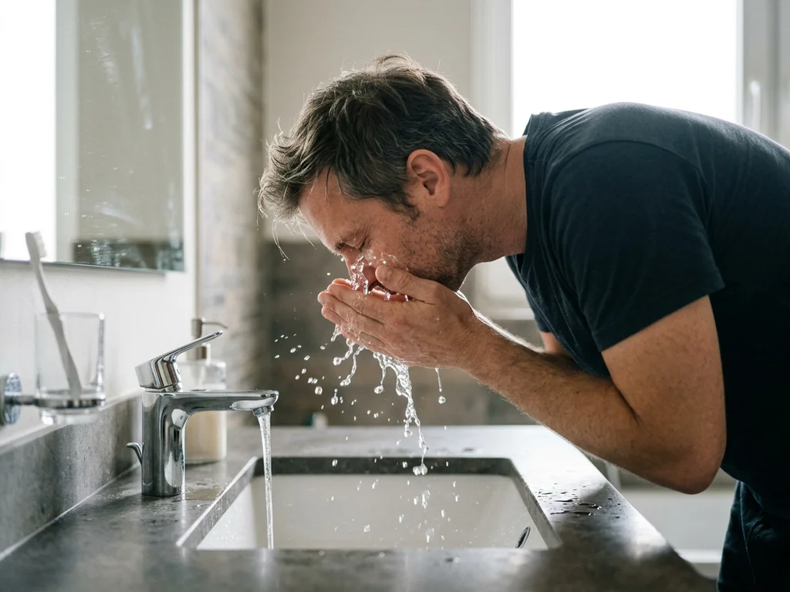
washing-face-action
REUSED (63 KB)
A modest adult man leaning over a clean modern bathroom sink, splashing fresh cool water onto his face with cupped hands. Dynamic gentle water droplets in crisp focus, natural bathroom lighting. No women. Strictly no overlay text, captions, words, or watermarks. Aspect ratio 4:3.
applying-lotion-action
REUSED (44 KB)
Close-up of a person's hands gently rubbing soothing white moisturizing skin lotion into the back of a hand. Soft, clean, realistic lighting, bathroom background. Strictly no overlay captions, text, words, or watermarks. Aspect ratio 4:3.
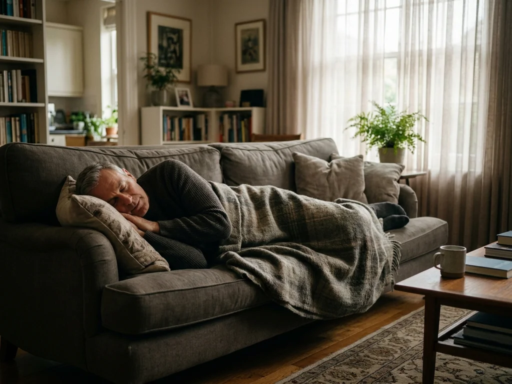
taking-a-nap-sofa
REUSED (89 KB)
A dignified adult man peacefully taking an afternoon nap on a comfortable large living room sofa, covered with a soft wool throw blanket, head resting on a plush cushion. Gentle daylight streaming through curtains. No women. Strictly no overlay text, captions, words, or watermarks. Aspect ratio 4:3.
data-center-hero
REUSED (136 KB)
High-end technology photography of a modern enterprise data center facility. Long symmetrical corridor of tall black server rack enclosures with glowing blue and green LED status lights, perforated metal doors, and raised polished access flooring. Clean cool ambient atmosphere. Strictly human-free composition. Strictly no text, labels, numbers, brand names, or watermarks. Aspect ratio 4:3 landscape.
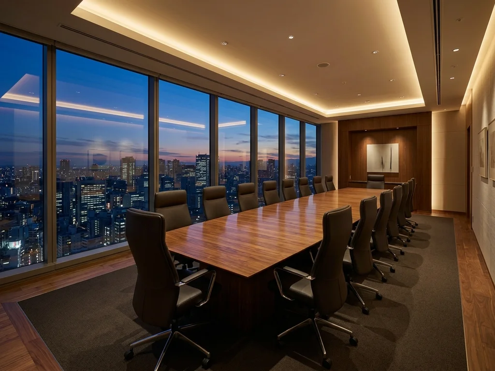
business-communication-hero
REUSED (87 KB)
Executive corporate boardroom in a modern skyscraper. Long polished walnut conference table with leather chairs, large floor-to-ceiling glass windows offering panoramic view of urban skyline at twilight. Soft interior architectural lighting. Strictly human-free composition. Strictly no readable text, words, charts, or watermarks. Aspect ratio 4:3 landscape.
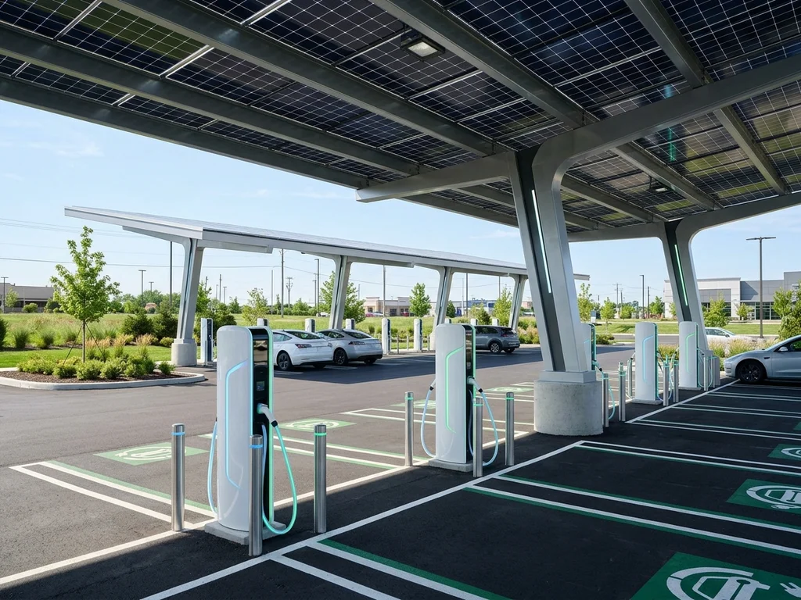
electric-vehicle-station-hero
REUSED (163 KB)
A modern electric vehicle charging plaza on a bright clear day. Sleek white and chrome EV charging pedestals with illuminated cables under a contemporary solar canopy. Clean asphalt paving and green landscaping. Strictly human-free composition. Strictly no brand logos, text, letters, or watermarks on chargers. Aspect ratio 4:3 landscape.
vegetables-hero
REUSED (205 KB)
Vibrant farmers market outdoor wooden stall overflowing with an abundant harvest of fresh vegetables: crisp carrots with green tops, dark leafy greens, ripe bell peppers, plump eggplants, and purple cabbage. Natural morning sunlight. Strictly human-free composition. Strictly no price signs, text, labels, or watermarks. Aspect ratio 4:3 landscape.
fruits-hero
REUSED (175 KB)
Abundant rustic wooden harvest display of fresh ripe fruits: red apples, sweet oranges, purple grapes, golden pears, and fresh berries arranged artfully in woven wicker baskets. Warm natural ambient lighting. Strictly human-free composition. Strictly no stickers, text, words, or watermarks. Aspect ratio 4:3 landscape.
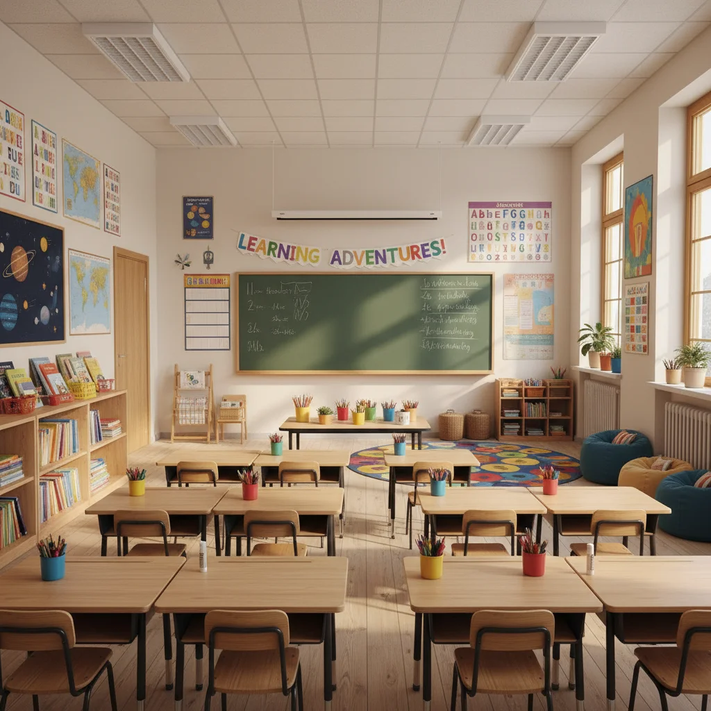
classroom-hero
REUSED (121 KB)
Contemporary adult lecture and seminar classroom. Clean wooden seminar desks arranged neatly with comfortable chairs, clean white walls, wide windows with natural daylight, and a clean blank presentation board. Strictly human-free composition. Strictly no text, writing, numbers, or watermarks on boards. Aspect ratio 4:3 landscape.
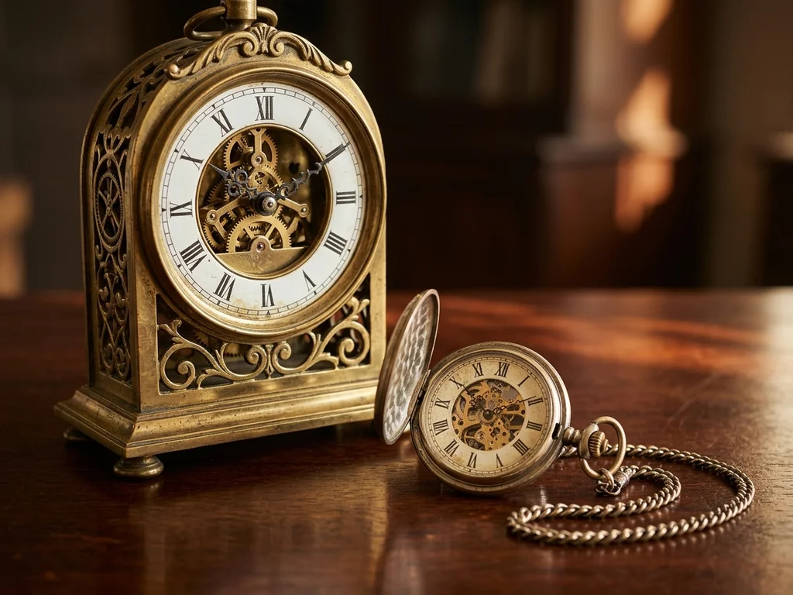
telling-time-hero
REUSED (101 KB)
Artful horological photography of fine mechanical timepieces. Antique brass mantel clock with intricate gears beside a classic open pocket watch on a dark polished mahogany surface, soft warm golden light. Strictly human-free composition. Clean classic Roman numerals on dials, strictly no brand names, letters, or watermarks. Aspect ratio 4:3 landscape.
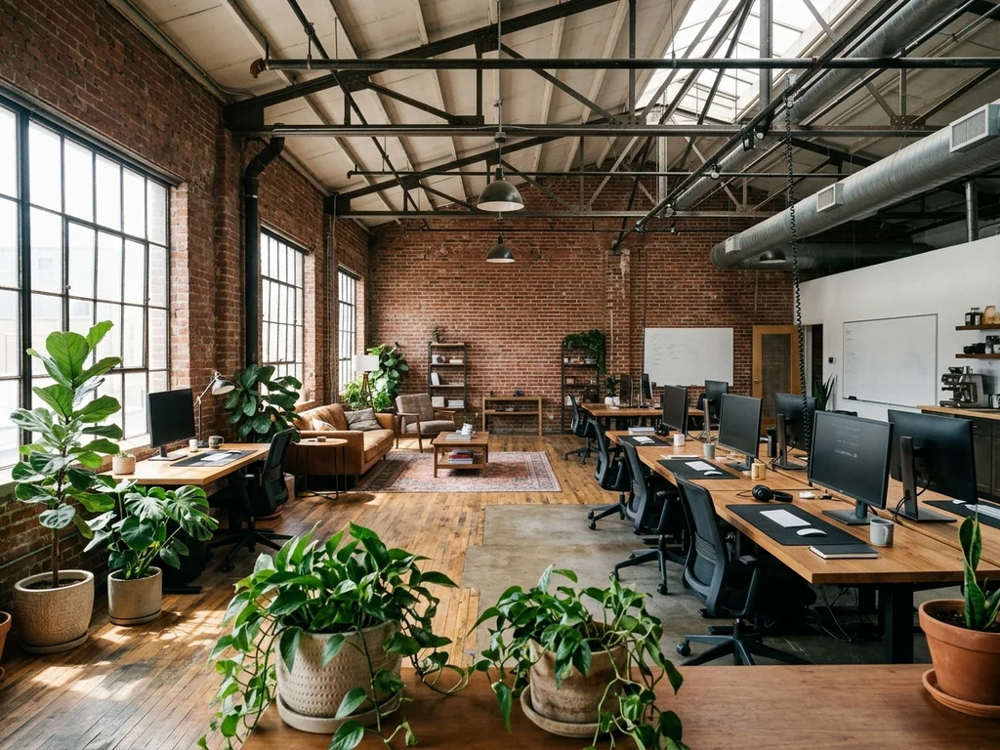
startup-culture-hero
REUSED (192 KB)
Creative tech startup loft workspace. Exposed brick walls, high industrial ceiling, large sunlit warehouse windows, open wooden collaborative desks with dual monitors, potted fiddle-leaf plants, and casual lounge seating. Strictly human-free composition. Strictly no readable text, words, logos, or watermarks. Aspect ratio 4:3 landscape.
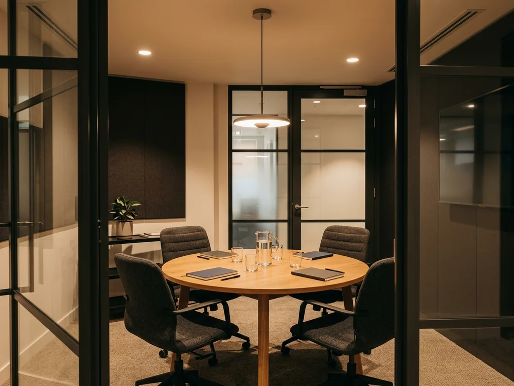
meeting-room-hero
REUSED (63 KB)
Intimate professional meeting room with glass partition walls. Round oak table surrounded by four ergonomic fabric chairs, notebooks with blank covers, glass water pitcher, and soft warm recessed ceiling lights. Strictly human-free composition. Strictly no text, whiteboard markings, or watermarks. Aspect ratio 4:3 landscape.
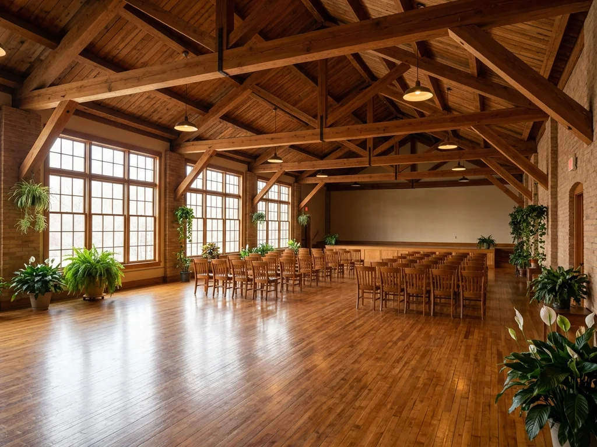
community-center-hero
REUSED (148 KB)
Spacious, warm civic community center hall. Polished hardwood floor, exposed timber roof beams, large multi-pane windows filling the room with daylight, tidy rows of wooden chairs, and indoor greenery. Strictly human-free composition. Strictly no posters, readable signs, text, or watermarks. Aspect ratio 4:3 landscape.
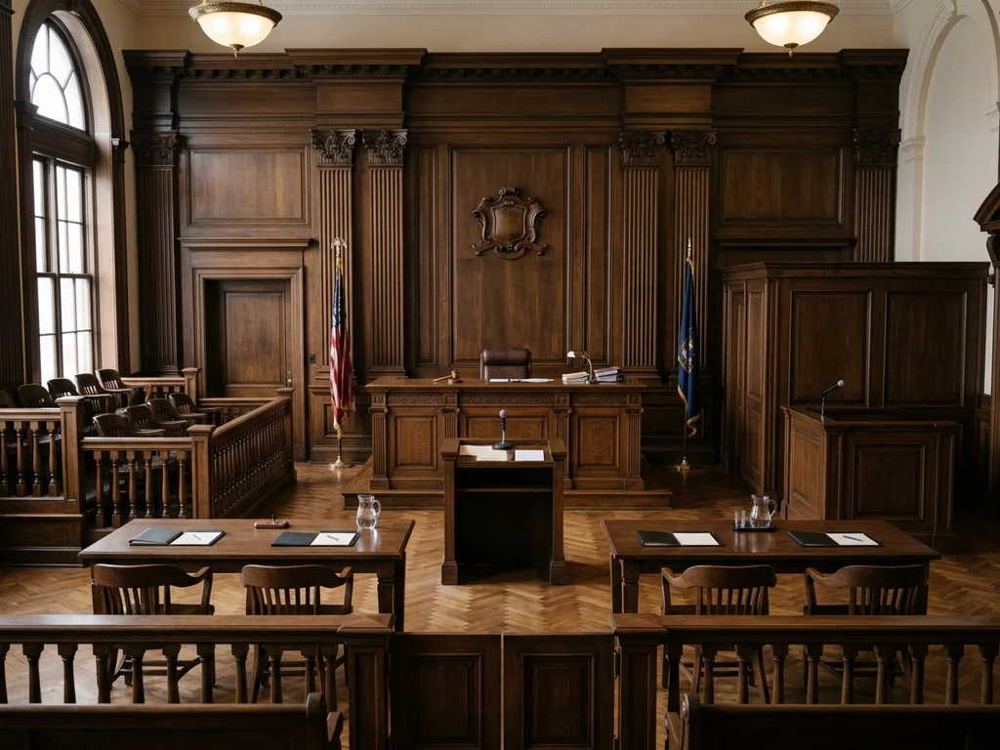
courtroom-trial-hero
REUSED (94 KB)
Imposing dignified municipal courtroom. Elevated dark oak judge's bench with polished wooden gavel, enclosed witness stand, jury box railings, and tall classical wall paneling under soft formal lighting. Strictly human-free composition. Strictly no text, seals with lettering, words, or watermarks. Aspect ratio 4:3 landscape.
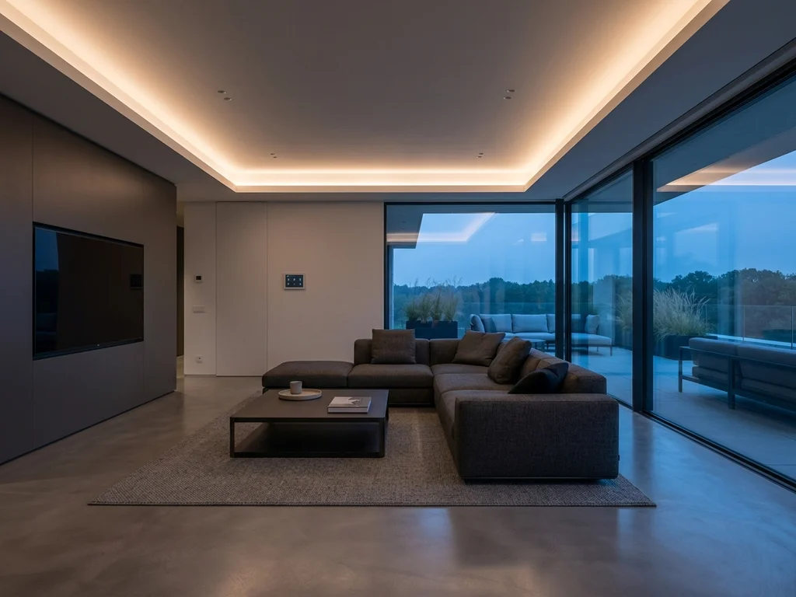
smart-home-hero
REUSED (49 KB)
Ultra-modern minimalist smart living room interior. Sleek low-profile furniture, floor-to-ceiling glass doors opening to a tranquil terrace, automated ambient cove lighting along the ceiling, and a clean flush wall control panel. Strictly human-free composition. Strictly no text, brand logos, or watermarks. Aspect ratio 4:3 landscape.
stock-exchange-hero
REUSED (203 KB)
Panoramic architectural perspective of a modern financial stock exchange hall. Curved electronic display walls with abstract graphical charts and candlestick waves, multiple workstation desks with monitors, tall trading room architecture. Strictly human-free composition. Strictly no readable ticker symbols, words, letters, or watermarks. Aspect ratio 4:3 landscape.
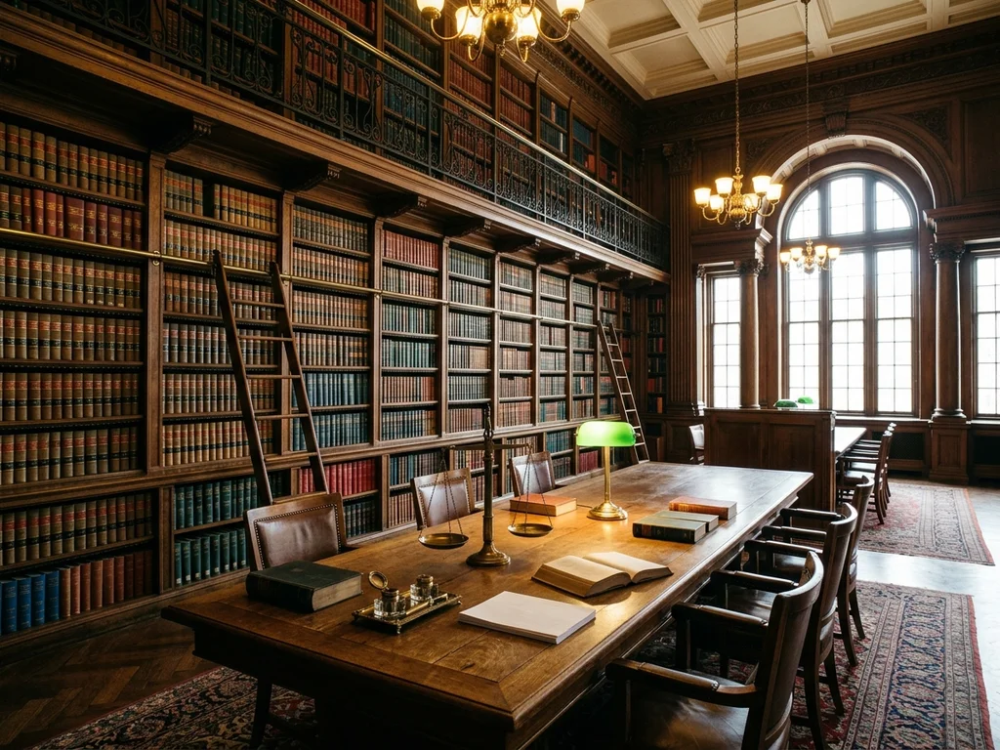
rights-regulations-hero
REUSED (182 KB)
Prestigious law library. Towering floor-to-ceiling bookshelves lined with leather-bound legal volumes, a solid oak reading table with an antique brass balance scale of justice and green banker's lamp. Warm academic atmosphere. Strictly human-free composition. Strictly no readable book titles, text, or watermarks. Aspect ratio 4:3 landscape.
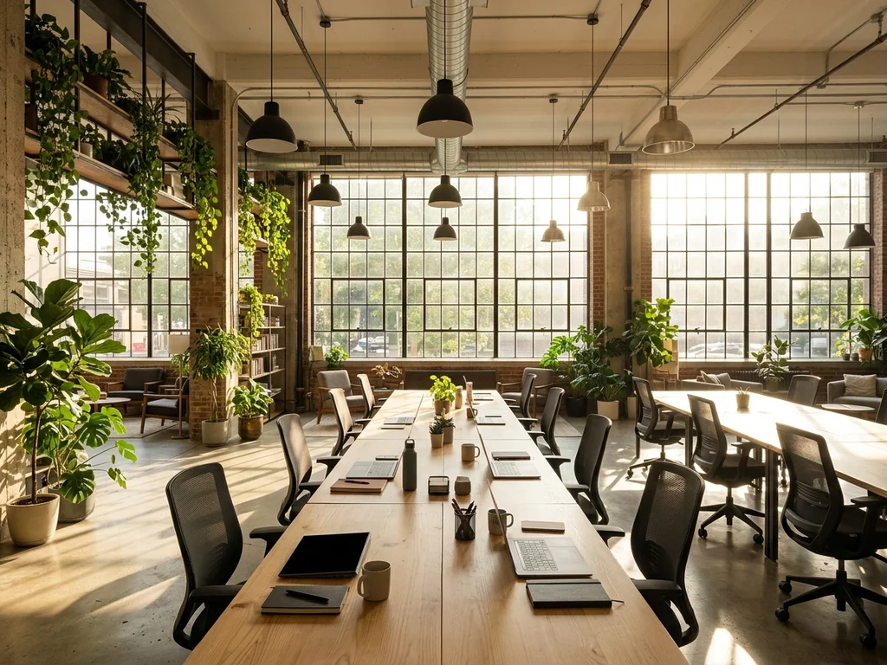
coworking-space-hero
REUSED (160 KB)
Sun-drenched urban coworking space. Long blonde-wood communal work tables, ergonomic task chairs, lush indoor plants, hanging pendant lights, and large industrial windows overlooking leafy trees. Strictly human-free composition. Strictly no laptop screen text, posters, words, or watermarks. Aspect ratio 4:3 landscape.
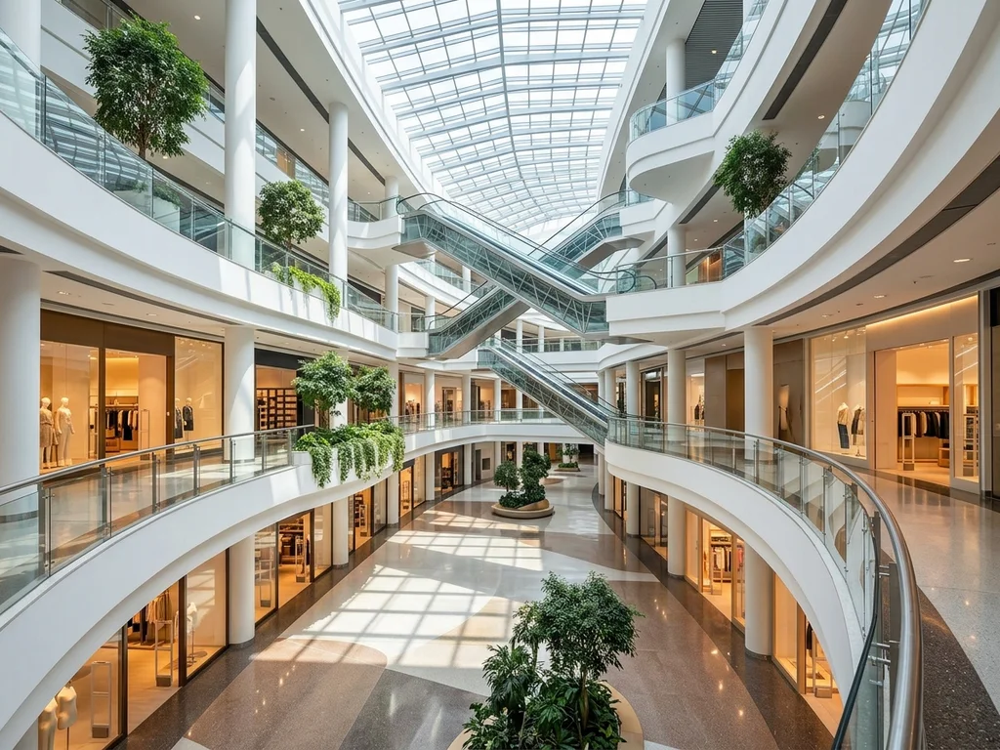
shopping-mall-hero
REUSED (169 KB)
Grand multi-story modern shopping mall atrium. Soaring glass skylight casting bright daylight across curved white balconies, sleek glass escalators, polished terrazzo floor, and contemporary retail storefronts with warm interior window displays. Strictly human-free composition. Strictly no store name signs, text, logos, or watermarks. Aspect ratio 4:3 landscape.
park-hero
REUSED (285 KB)
Picturesque tranquil city park on a sunny morning. Winding stone pathway bordered by flowering perennial borders, manicured green lawn, mature oak and willow trees casting soft dappled shade, and an empty curved wooden bench. Strictly human-free composition. Strictly no park signs, text, or watermarks. Aspect ratio 4:3 landscape.
tech-gadgets-hero
REUSED (93 KB)
Premium lifestyle product photography of modern consumer technology gadgets. Sleek matte black smartphone, wireless over-ear headphones, smartwatch with clean dark face, and stylus pen neatly arranged on a minimalist oak wood surface. Soft studio lighting. Strictly human-free composition. Strictly no screen text, brand logos, or watermarks. Aspect ratio 4:3 landscape.
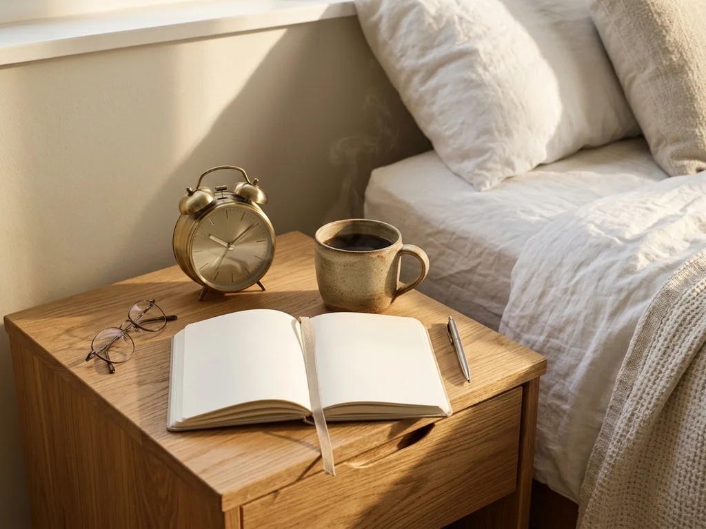
daily-routines-hero
REUSED (80 KB)
A serene morning bedside scene capturing daily routines. Simple elegant alarm clock, ceramic cup of steaming coffee, open blank diary, and eyeglasses resting on an oak nightstand beside a neatly made bed with white linen in warm sunrise light. Strictly human-free composition. Strictly no readable text, numbers, or watermarks. Aspect ratio 4:3 landscape.
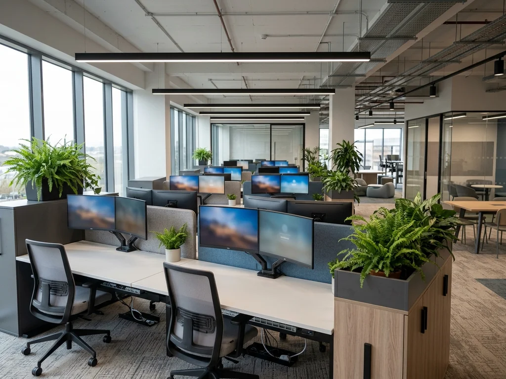
office-hero
REUSED (117 KB)
Bright open-plan professional office environment. Tidy contemporary workstations with curved monitors, neat cable organization, acoustic divider screens, potted ferns, and floor-to-ceiling exterior windows. Strictly human-free composition. Strictly no readable screen text, papers with writing, or watermarks. Aspect ratio 4:3 landscape.
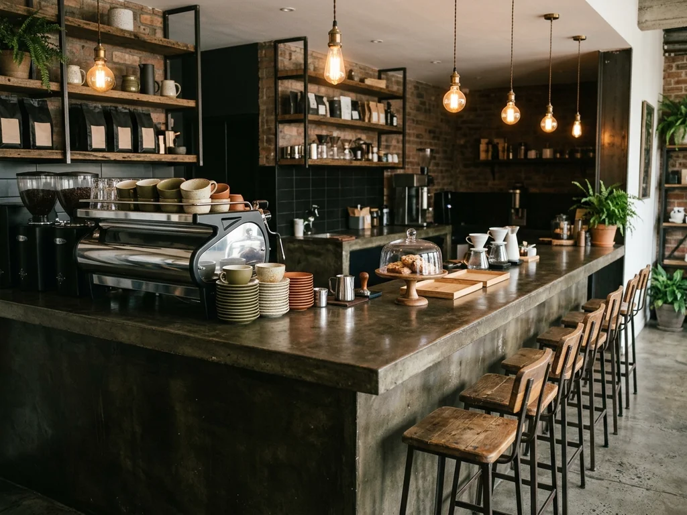
coffee-shop-hero
REUSED (118 KB)
Artisanal specialty coffee shop interior. Polished concrete counter with a gleaming chrome commercial espresso machine, ceramic cups neatly stacked, glass pastry bell cloche, warm Edison bulb pendant lighting, and rustic wooden bar stools. Strictly human-free composition. Strictly no menu board text, chalk writing, logos, or watermarks. Aspect ratio 4:3 landscape.
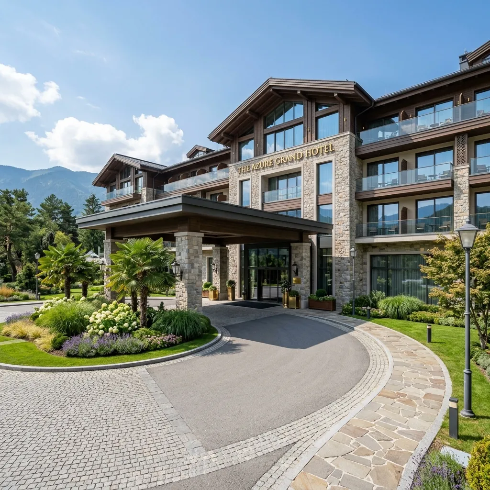
hotel-hero
REUSED (193 KB)
Luxurious boutique hotel grand lobby. Gleaming book-matched marble flooring, soaring ceiling with modern glass chandelier, elegant reception concierge counter with brass accents, and plush velvet lounge seating. Soft warm ambient lighting. Strictly human-free composition. Strictly no hotel name signs, text, or watermarks. Aspect ratio 4:3 landscape.
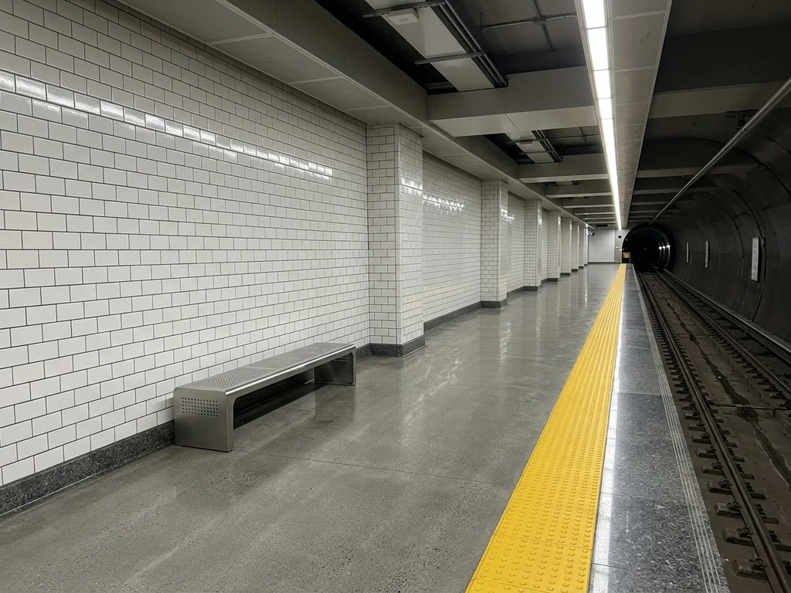
subway-hero
REUSED (139 KB)
Clean modern underground metro station platform. Glossy white subway tiles, polished granite platform edge with tactile yellow safety pavers, stainless steel bench, and recessed LED ceiling illumination. Empty tracks receding into tunnel. Strictly human-free composition. Strictly no transit maps, advertising posters, text, or watermarks. Aspect ratio 4:3 landscape.
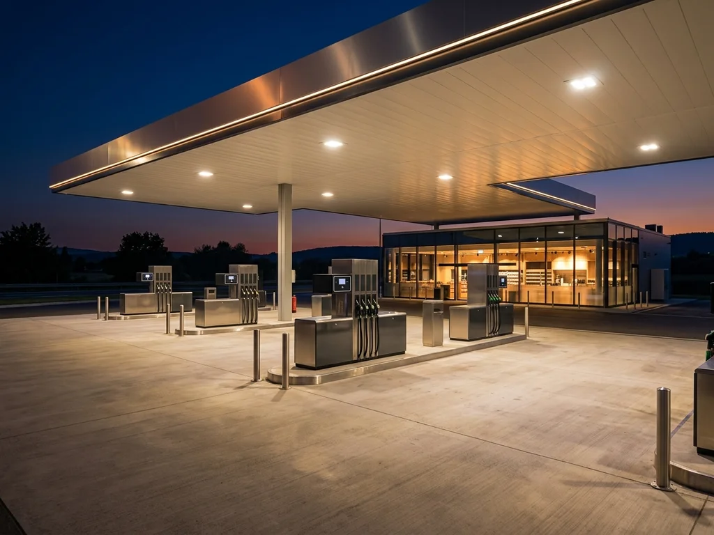
gas-station-hero
REUSED (78 KB)
Contemporary highway service station illuminated at twilight. Clean illuminated canopy ceiling over sleek stainless steel fuel pumps, clean concrete forecourt, and modern glass convenience store in the background. Strictly human-free composition. Strictly no brand logos, fuel price numbers, text, or watermarks. Aspect ratio 4:3 landscape.
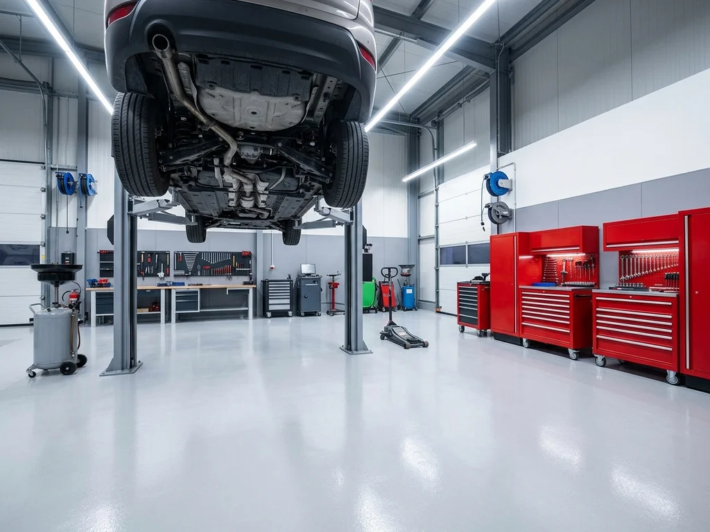
mechanic-hero
REUSED (90 KB)
Spotless modern automotive repair workshop. A vehicle chassis elevated on a hydraulic two-post lift, organized red rolling tool chests with neatly stored wrenches and sockets, clean epoxy coated floor. Bright overhead LED shop lights. Strictly human-free composition. Strictly no car brand badges, text, posters, or watermarks. Aspect ratio 4:3 landscape.
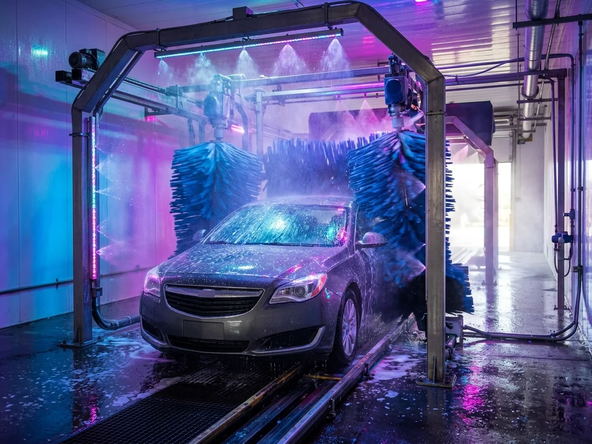
car-wash-hero
REUSED (154 KB)
Inside a modern automated tunnel car wash. Soft blue spinning foam contour brushes, high-pressure rinse arches spraying clean water mist, vibrant colored lighting, and a glistening car windshield emerging into the dry cycle. Strictly human-free composition. Strictly no brand logos, text, or watermarks. Aspect ratio 4:3 landscape.
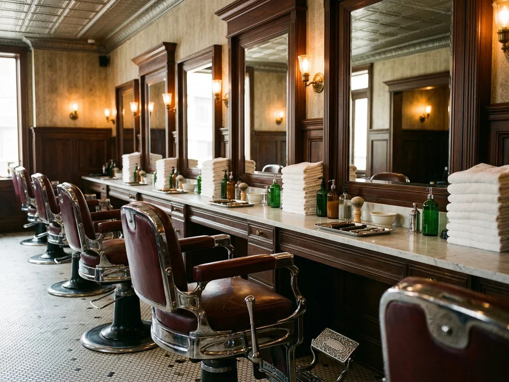
barbershop-hero
REUSED (136 KB)
Classic upscale gentleman's barbershop interior. Antique leather barber chairs with chrome footrests facing dark wood framed mirrors, marble shelf with glass bottles of aftershave and tonics, clean folded white towels, and warm vintage wall sconces. Strictly human-free composition. Strictly no labels on bottles, text, signs, or watermarks. Aspect ratio 4:3 landscape.
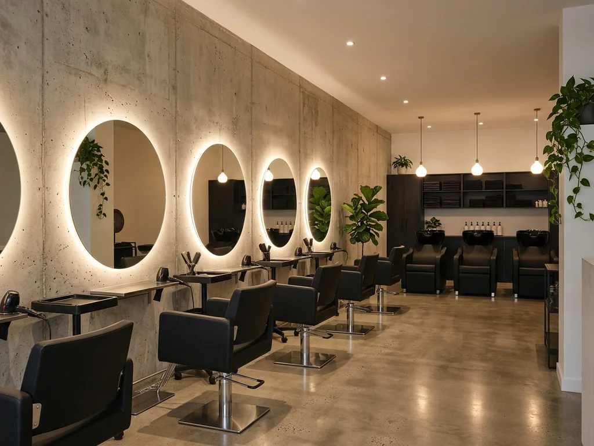
hair-salon-hero
REUSED (89 KB)
Chic contemporary hair styling studio. Round minimalist backlit vanity mirrors along an exposed concrete wall, stylish hydraulic styling chairs, sleek black washing basins in background, and warm soft ambient lighting. Strictly human-free composition. Strictly no product brand names, text, or watermarks. Aspect ratio 4:3 landscape.
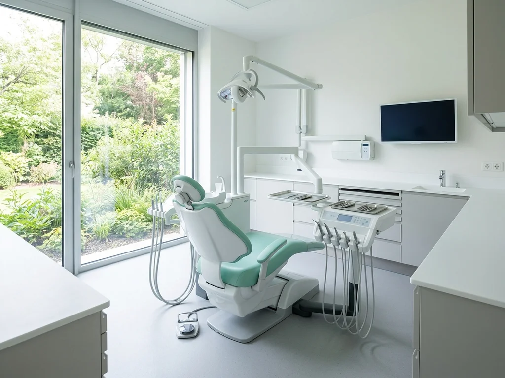
dental-clinic-hero
REUSED (88 KB)
State-of-the-art modern dental operatory clinic room. Ergonomic mint-green patient examination chair, precision dental LED overhead light, sterile stainless steel instrument tray, and large window with peaceful garden view. Spotlessly clean clinical environment. Strictly human-free composition. Strictly no text, charts with writing, brand names, or watermarks. Aspect ratio 4:3 landscape.
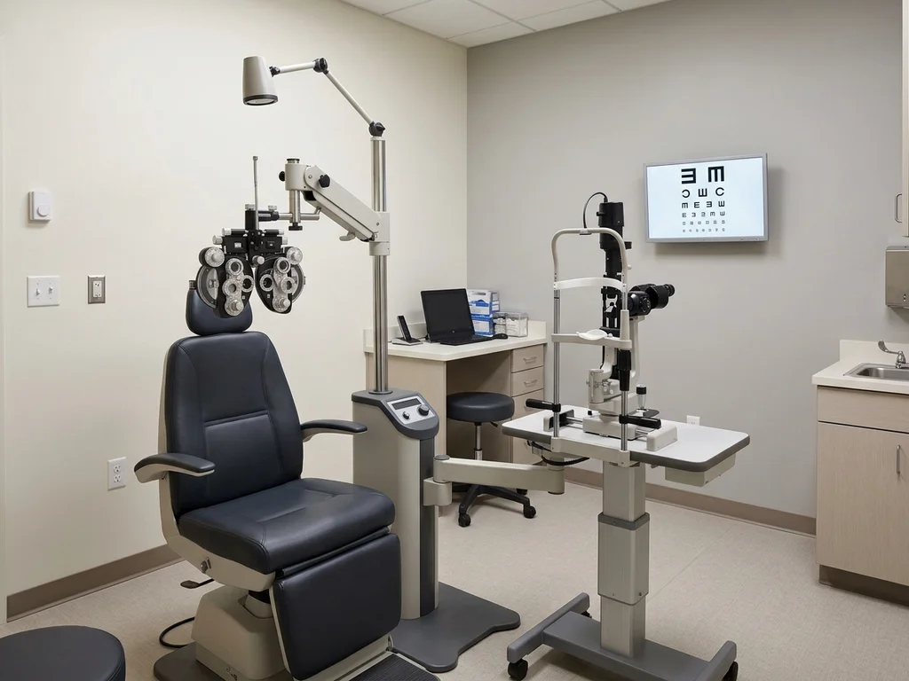
eye-doctor-hero
REUSED (53 KB)
Professional optometry vision examination suite. Precision phoropter vision tester mounted beside an ergonomic examination chair, slit lamp microscope on medical table, clean neutral wall finishes under calibrated clinical lighting. Strictly human-free composition. Strictly no letters on eye charts (use abstract geometric C or E rings without readable text), no words, labels, or watermarks. Aspect ratio 4:3 landscape.
police-station-hero
REUSED (134 KB)
Dignified architectural exterior of a municipal civic police department headquarters at dusk. Classical stone facade with stately columns, broad stone steps, warm architectural facade lighting, and manicured civic plaza. Strictly human-free composition. Strictly no readable building signs, lettering, police logos, or watermarks. Aspect ratio 4:3 landscape.
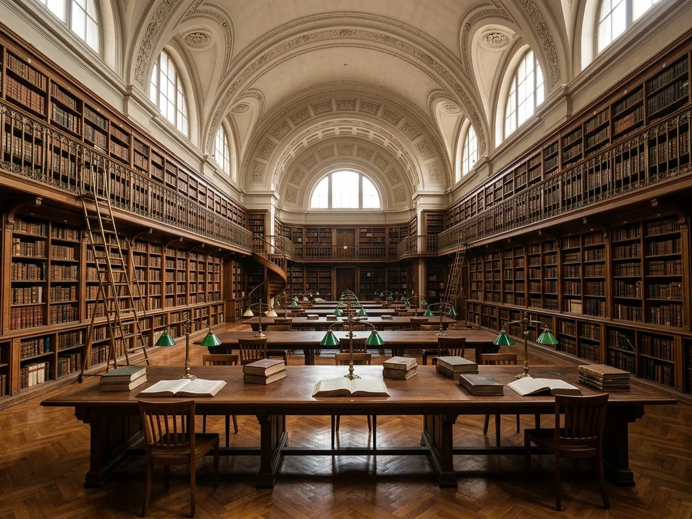
academic-life-hero
REUSED (189 KB)
Magnificent classical university research library reading room. Soaring vaulted ceiling with arched windows, two stories of dark oak bookcases with brass ladders, long reading tables with brass lamps, and rich parquet flooring. Quiet scholarly atmosphere. Strictly human-free composition. Strictly no readable book titles, text, or watermarks. Aspect ratio 4:3 landscape.
student-life-hero
REUSED (200 KB)
Historic university campus quadrangle courtyard on a bright autumn afternoon. Neo-gothic stone archway cloisters framing a vibrant lawn with golden fallen leaves, stone benches, and historic collegiate architecture. Strictly human-free composition. Strictly no campus signs, text, or watermarks. Aspect ratio 4:3 landscape.
university-campus-hero
REUSED (142 KB)
Sweeping wide architectural view of an esteemed university campus. Stately brick and limestone academic halls flanking a grand central green lawn, mature shade trees, paved pedestrian walkways, and clear blue sky. Strictly human-free composition. Strictly no university banners, text, or watermarks. Aspect ratio 4:3 landscape.
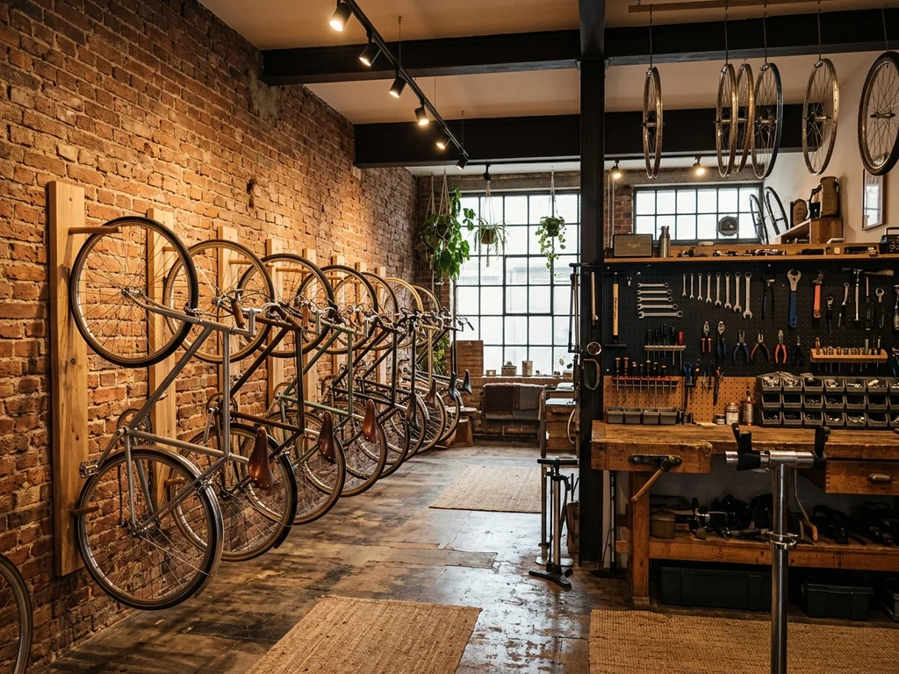
bicycle-shop-hero
REUSED (218 KB)
Artisanal urban bicycle workshop and retail showroom. Row of elegant lightweight commuter and road bicycles neatly mounted on wooden wall displays, workbench with organized repair tools, brick wall with warm track lighting. Strictly human-free composition. Strictly no brand logos on bicycle frames, text, signs, or watermarks. Aspect ratio 4:3 landscape.
fruits-1-usage-scene-2
REUSED (134 KB)
Photorealistic macro photography of a generous cluster of dark purple concord grapes on the vine, dusted with delicate natural white bloom, fresh green vine tendrils. Crisp clear visual focus. Strictly human-free composition. Strictly no text, labels, or watermarks. Aspect ratio 4:3.
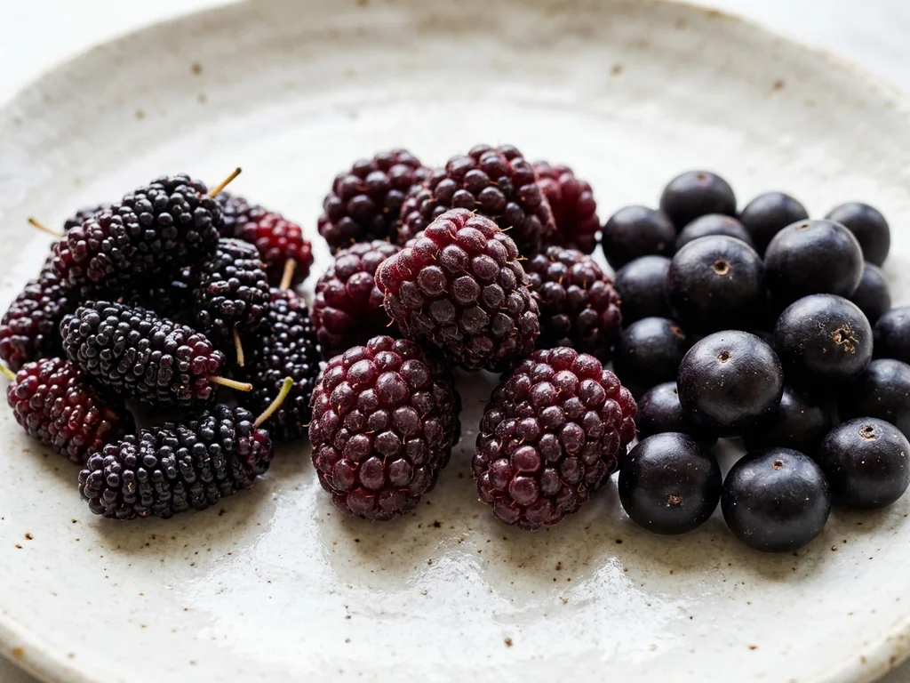
fruits-2-usage-scene-1
REUSED (107 KB)
Macro culinary comparison of three distinct dark berries arranged side-by-side on a rustic white ceramic plate: oblong deep purple mulberries with small stems, plump dark boysenberries with distinct drupelets, and round smooth black acai berries. Bright natural light. Strictly human-free composition. Strictly no text, labels, or watermarks. Aspect ratio 4:3.
fruits-3-usage-scene-2
REUSED (87 KB)
Culinary comparison of three fresh orange citrus fruits on a wooden board: one slightly flattened loose-skinned mandarin with a section peeling away, one bright smooth round clementine, and one deep reddish-orange tangerine. Crisp natural light. Strictly human-free composition. Strictly no stickers, text, or watermarks. Aspect ratio 4:3.
vegetables-1-usage-scene-3
REUSED (134 KB)
Culinary produce comparison on a slate cutting board: a large genuine rough bark-skinned brown yam root cut in half showing creamy off-white starchy flesh, placed clearly beside a smooth deep crimson-red round beetroot with reddish stem. Crisp daylight. Strictly human-free composition. Strictly no text, labels, or watermarks. Aspect ratio 4:3.
vegetables-2-usage-scene-4
REUSED (94 KB)
A fresh bundle of rapini (broccoli rabe) tied with natural twine on a wooden kitchen counter, clearly showcasing its jagged dark green leaves and small tender broccoli-like florets. Fresh morning light. Strictly human-free composition. Strictly no text, labels, or watermarks. Aspect ratio 4:3.
vegetables-3-usage-scene-3
REUSED (76 KB)
Produce comparison of unusual vegetables: a bumpy-skinned green oblong bitter melon with warty ridges resting beside a smooth pale green pear-shaped chayote squash on a light marble kitchen surface. Natural light. Strictly human-free composition. Strictly no labels, text, or watermarks. Aspect ratio 4:3.
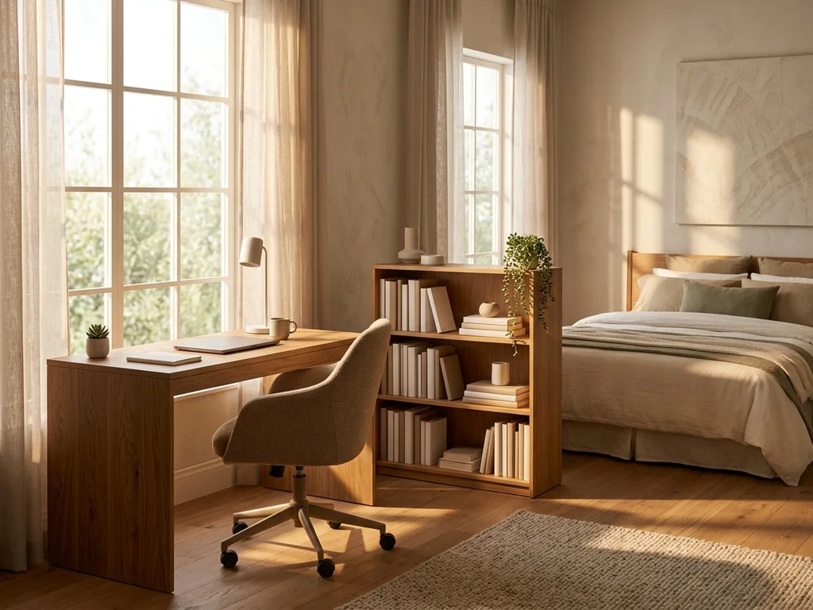
bedroom-1-usage-scene-1
REUSED (89 KB)
Clean modern adult bedroom interior showing an oak work desk with comfortable chair, small bookshelf with neatly arranged books with blank spines, and warm morning light streaming through windows. Strictly human-free composition (no framed portraits, no people). Strictly no text, writing, or watermarks. Aspect ratio 4:3.
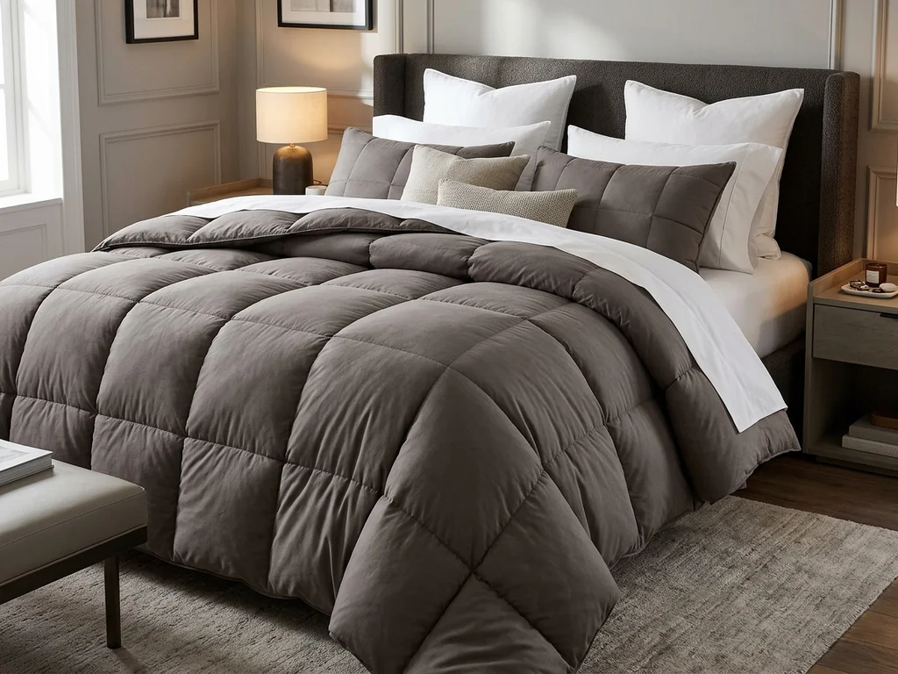
bedroom-2-usage-scene-1
REUSED (112 KB)
A luxurious adult king-size bed featuring a very thick, plush, puffy quilted down comforter in warm charcoal grey, generously draped over the bed with deep soft folds, resting over clean white sheets and supportive pillows. Contemporary adult bedroom. Strictly human-free composition. Strictly no text, labels, or watermarks. Aspect ratio 4:3.
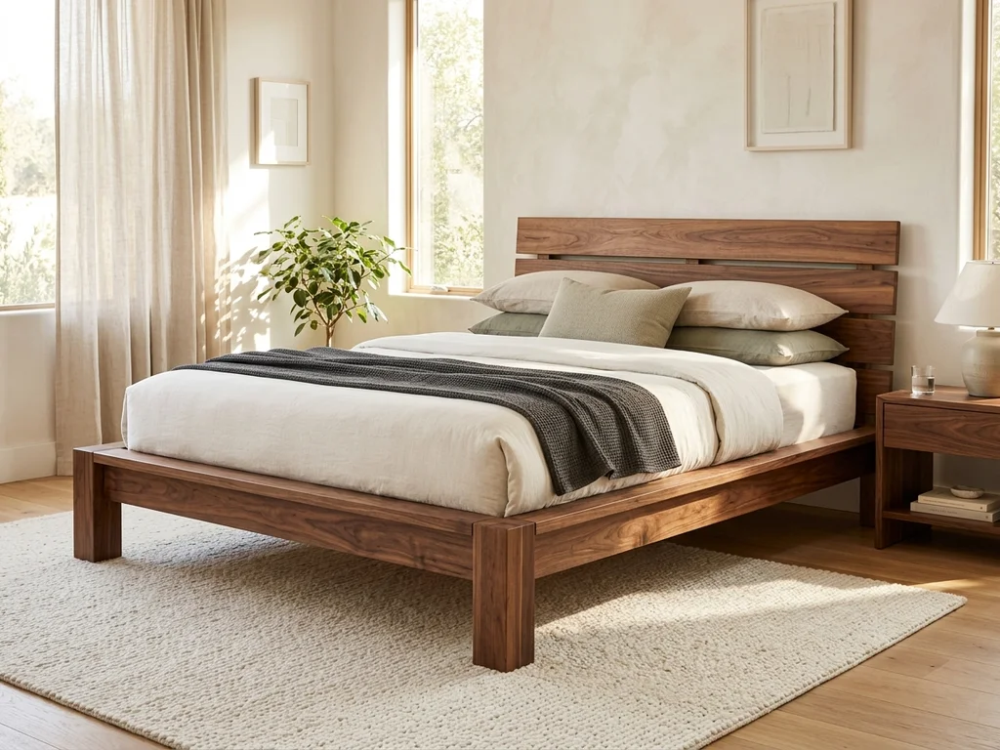
bedroom-2-usage-scene-2
REUSED (120 KB)
Contemporary adult bedroom highlighting the solid natural walnut wooden bed frame: substantial low-profile wooden platform base, solid wooden legs, and matching wooden slatted headboard prominently visible and supporting a neat mattress. Warm morning sunlight. Strictly human-free composition. Strictly no text or watermarks. Aspect ratio 4:3.
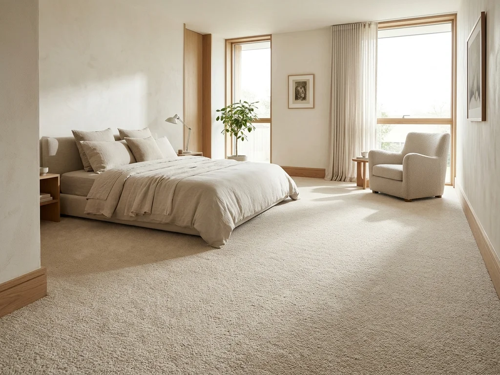
bedroom-2-usage-scene-4
REUSED (142 KB)
Spacious modern adult bedroom featuring seamless, luxurious wall-to-wall plush neutral wool carpeting covering the entire floor from corner to corner and meeting the wooden baseboards, with a bed and armchair resting on it. Natural daylight. Strictly human-free composition. Strictly no text or watermarks. Aspect ratio 4:3.
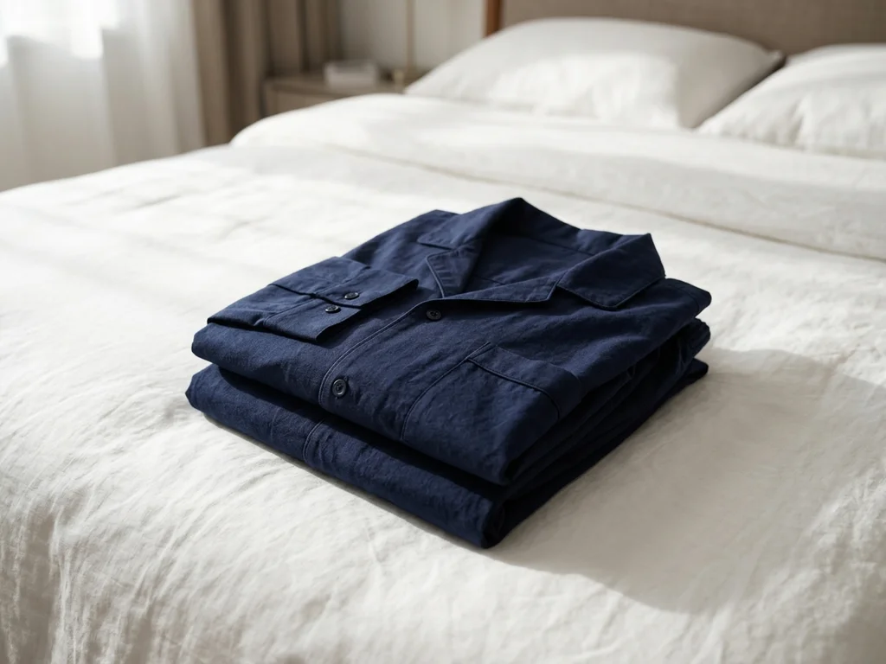
bedroom-3-usage-scene-4
REUSED (47 KB)
A set of high-quality navy blue cotton pajama top and trousers, neatly folded in a tidy square resting on a crisp white duvet atop an adult bed. Soft morning light. Strictly human-free composition. Strictly no text, tags, clothing labels, or watermarks. Aspect ratio 4:3.
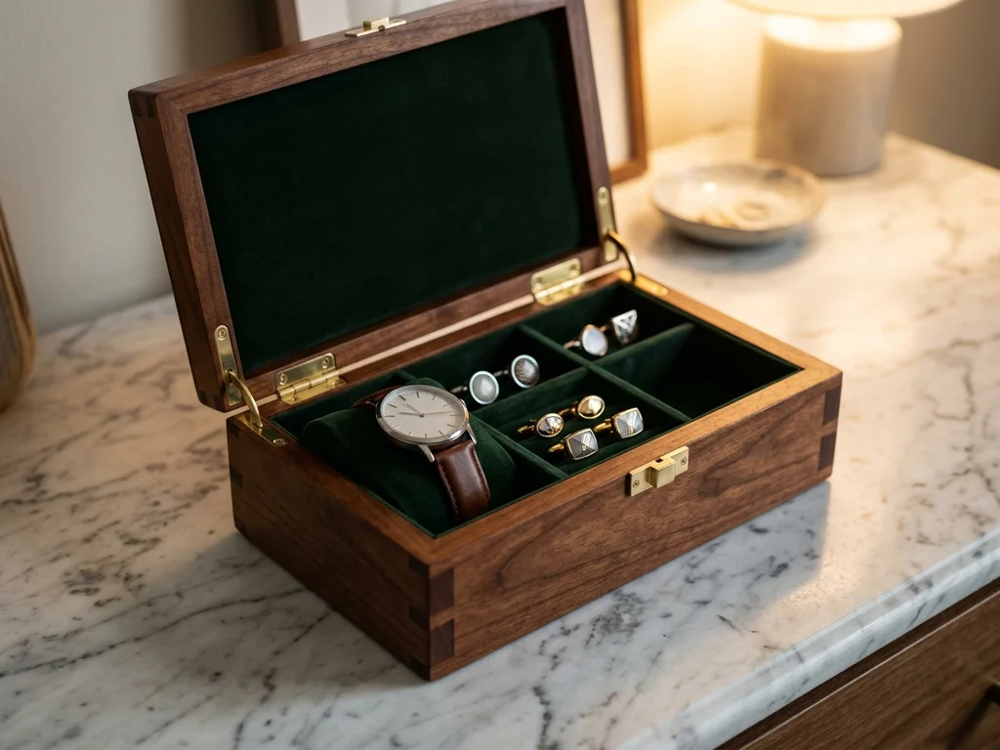
bedroom-4-usage-scene-2
REUSED (62 KB)
An elegant handcrafted dark cherrywood jewelry box with polished brass hinges sitting open on a marble bedroom dresser, revealing lined velvet compartments holding cufflinks and a classic wristwatch. Soft warm ambient lighting. Strictly human-free composition. Strictly no text, brand names, or watermarks. Aspect ratio 4:3.
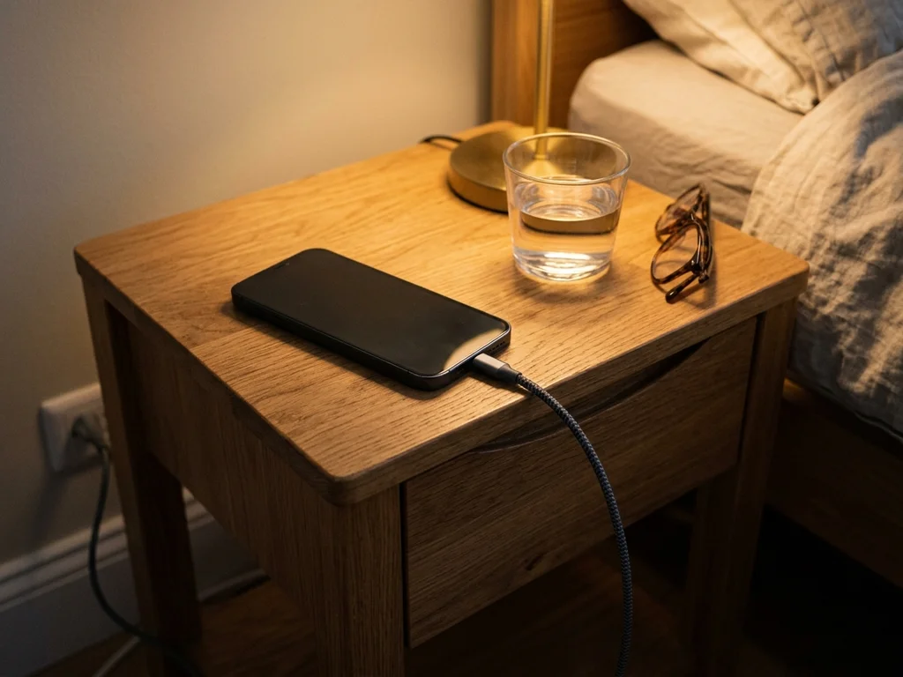
bedroom-4-usage-scene-3
REUSED (57 KB)
A modern smartphone resting on an oak bedroom nightstand with its braided charging cable neatly plugged into its port and leading down to the wall outlet. Small water glass and reading glasses beside it. Soft evening bedside lamp light. Strictly human-free composition. Strictly no screen text, brand logos, or watermarks. Aspect ratio 4:3.
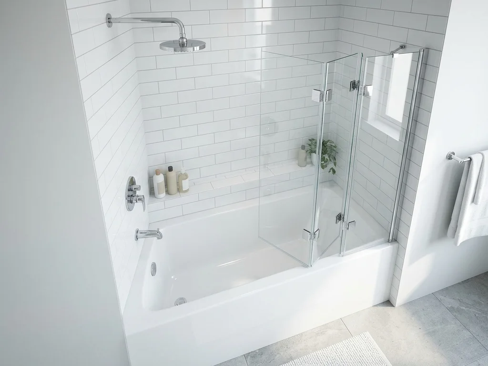
bathroom-1-usage-scene-1
REUSED (51 KB)
Clean modern bathroom interior showing a deep white porcelain bathtub equipped with an overhead chrome rain showerhead fixture mounted on the wall directly above it and a clear folding glass splash screen. Pristine white subway tile surround. Strictly human-free composition. Strictly no text, labels, or watermarks. Aspect ratio 4:3.
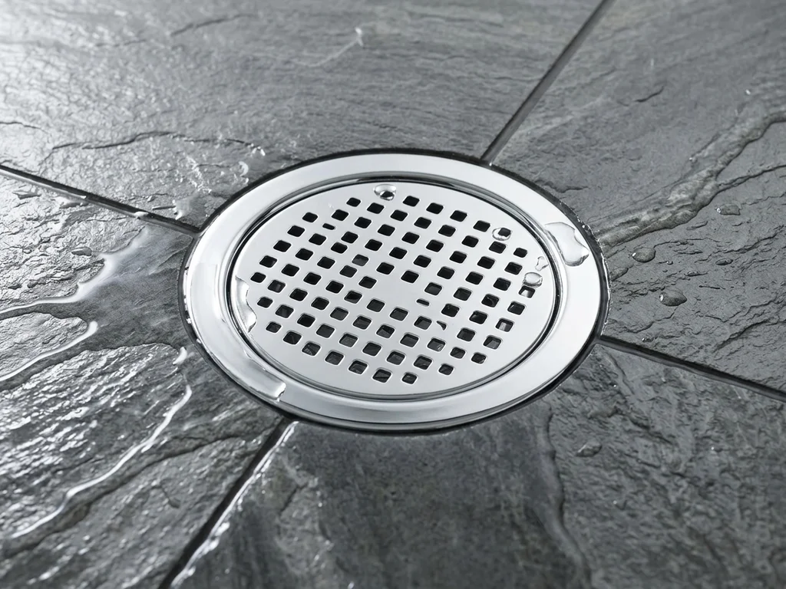
bathroom-1-usage-scene-2
REUSED (137 KB)
Close-up perspective of a gleaming chrome circular floor drain with perforated square grate set flush into contemporary grey slate bathroom floor tiles, with glistening clear water droplets flowing towards it. Bright clean lighting. Strictly human-free composition. Strictly no text or watermarks. Aspect ratio 4:3.
bathroom-1-usage-scene-4
REUSED (86 KB)
Stylish contemporary bathroom featuring vibrant glossy Mediterranean deep blue ceramic wall tiles, chrome fixtures, clean white ceramic sink, and neatly folded white bath towels. Natural light. Strictly human-free composition. Strictly no text, labels, or watermarks. Aspect ratio 4:3.
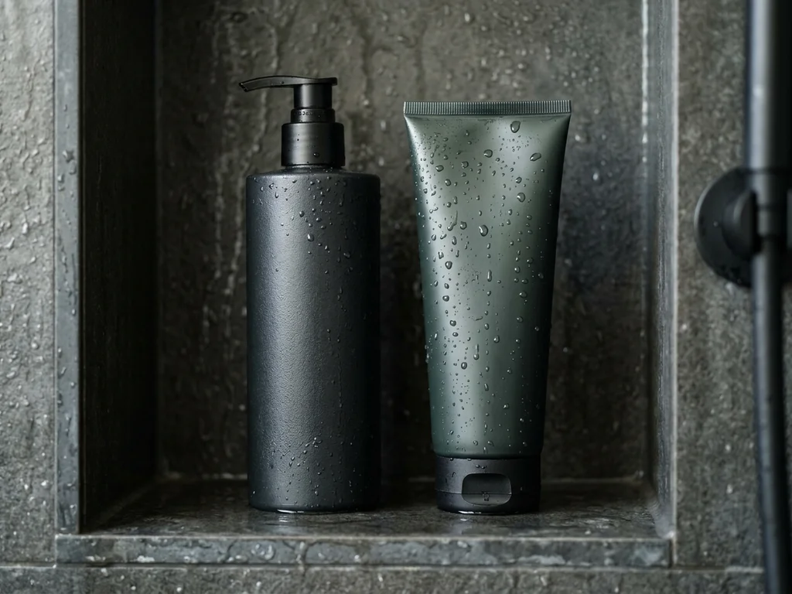
bathroom-2-usage-scene-1
REUSED (79 KB)
Two complementary modern bathroom bottles on a shower shelf: one tall dark bottle of hair shampoo and one matching squeezy tube bottle of hair conditioner, distinct shapes and textures, with fresh clean water droplets. Strictly human-free composition. Strictly no readable text, brand names, letters, or watermarks on the bottles. Aspect ratio 4:3.
bathroom-4-usage-scene-4
REUSED (57 KB)
A translucent seafoam-green pump bottle of body wash shower gel with rich silky bubbles visible inside, resting on a wet teak shower caddy beside a natural loofah sponge. Soft bathroom light. Strictly human-free composition. Strictly no text, labels, brand names, or watermarks on bottle. Aspect ratio 4:3.
bathroom-5-usage-scene-3
REUSED (33 KB)
Trio of distinct transparent glass cosmetic bottles on a clean bathroom shelf: one dropper bottle of clear facial serum, one frosted bottle of skin toner, and one mist spray bottle of rosewater. Elegant minimalist bathroom. Strictly human-free composition. Strictly no text, labels, or watermarks on bottles. Aspect ratio 4:3.
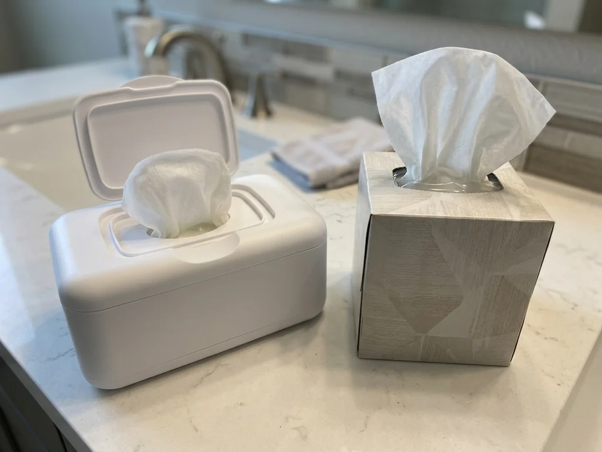
bathroom-5-usage-scene-4
REUSED (41 KB)
Comparison on a bathroom vanity: a sleek white plastic dispenser box with a pop-up lid holding moisture-retaining wet wipes beside a simple cardboard square cube box dispensing dry facial tissues. Clean modern bathroom. Strictly human-free composition. Strictly no text, brand logos, or watermarks on boxes. Aspect ratio 4:3.
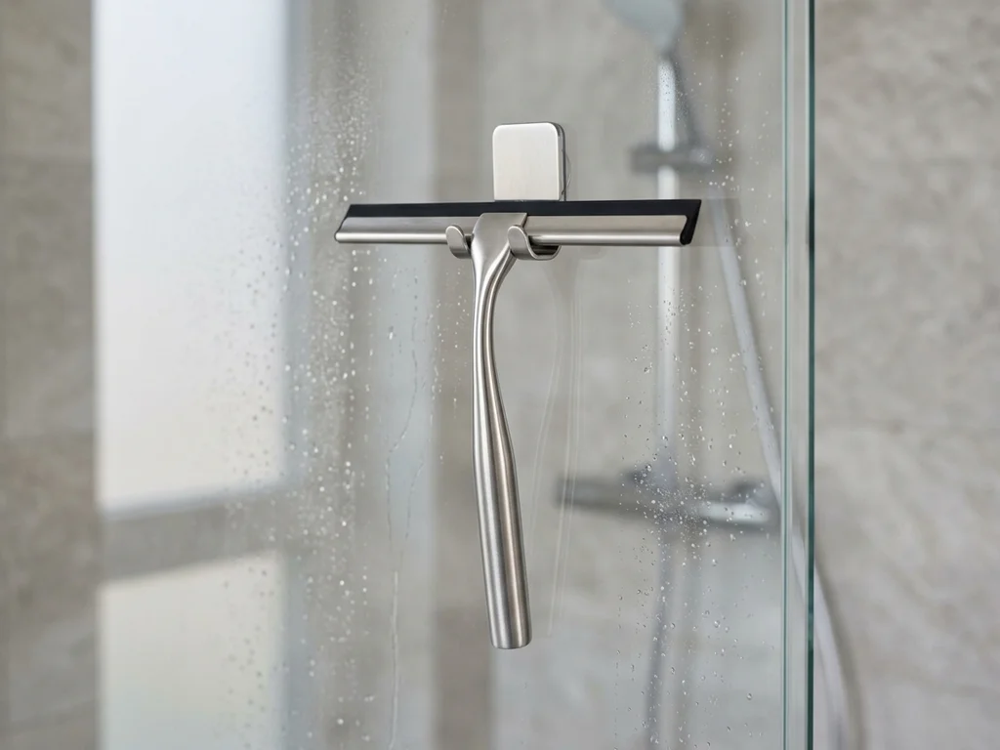
bathroom-6-usage-scene-3
REUSED (32 KB)
A sleek modern stainless steel shower squeegee with a flexible black silicone wiper blade, hanging neatly from a minimalist hook on a clear glass shower partition wall with light water condensation. Strictly human-free composition. Strictly no text or watermarks. Aspect ratio 4:3.
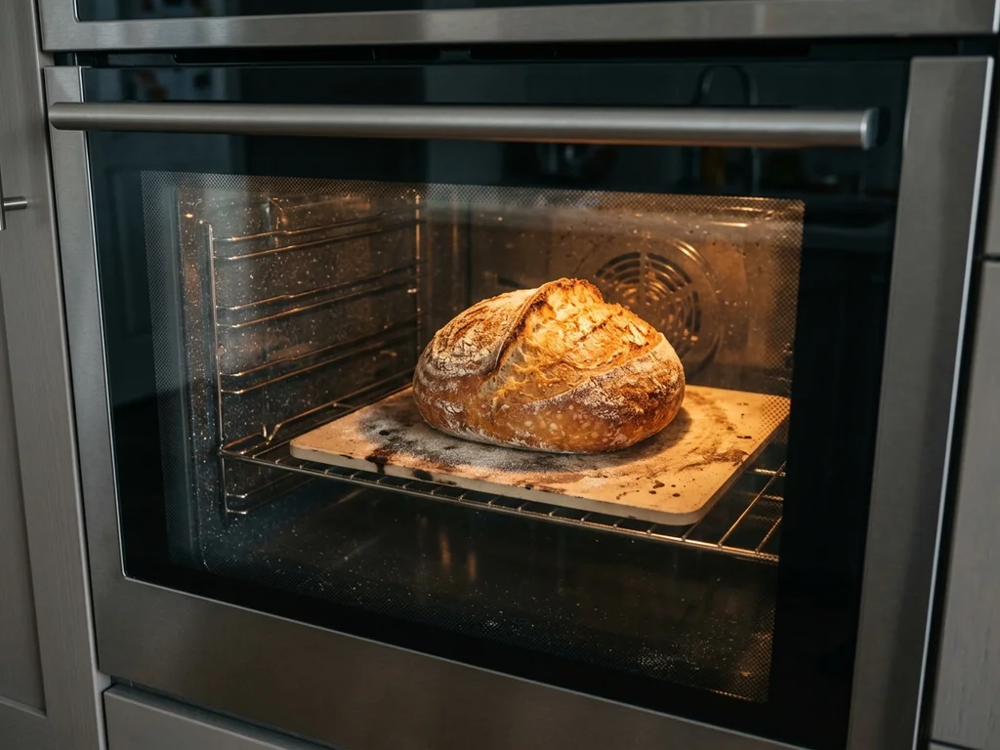
kitchen-1-usage-scene-1
REUSED (80 KB)
Looking through the clean double-glass door of a modern built-in kitchen oven: a golden-brown crusty artisan sourdough bread loaf baking on a pizza stone, illuminated by the warm interior oven light. Strictly human-free composition. Strictly no digital numbers, brand logos, text, or watermarks on oven. Aspect ratio 4:3.
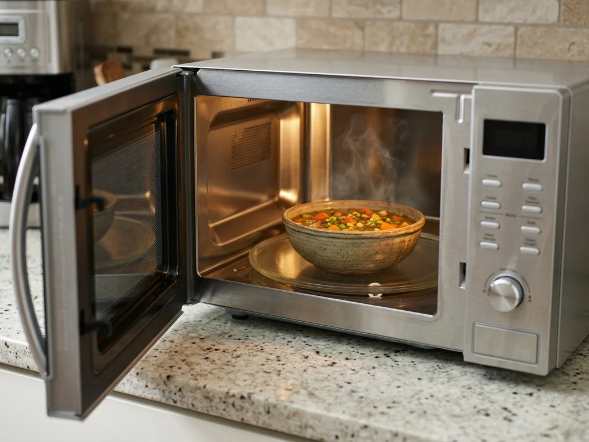
kitchen-1-usage-scene-2
REUSED (74 KB)
A steaming ceramic bowl of colorful vegetable soup with carrots and peas resting on the glass turntable inside a modern stainless steel microwave with the door swung open, revealing the warm illuminated interior. Clean kitchen counter. Strictly human-free composition. Strictly no digital clock numbers, text, or watermarks. Aspect ratio 4:3.
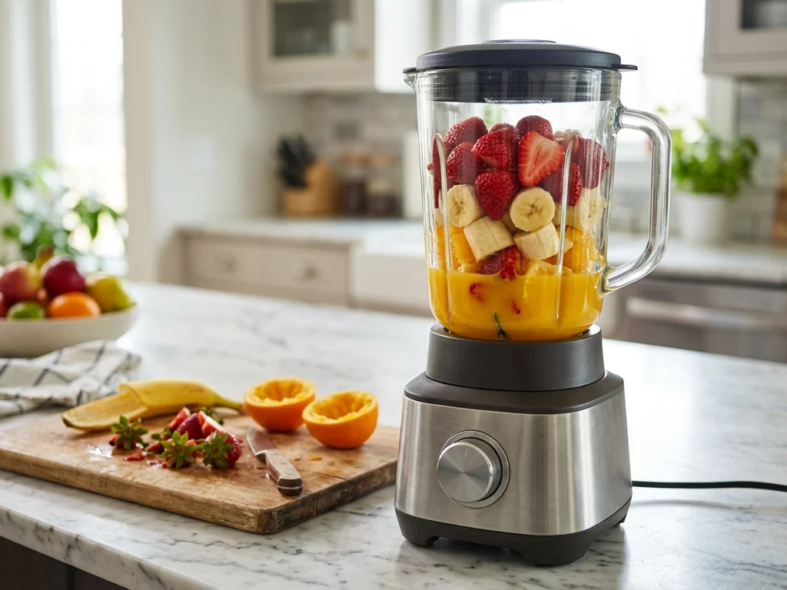
kitchen-1-usage-scene-3
REUSED (67 KB)
A heavy-duty glass countertop blender jug filled with colorful freshly sliced fruit: bright red strawberries, sweet yellow banana chunks, and orange juice, ready to blend, sitting on a marble kitchen island. Daylight. Strictly human-free composition. Strictly no brand logos, measurement numbers, text, or watermarks. Aspect ratio 4:3.
kitchen-3-usage-scene-2
REUSED (134 KB)
A simple, appetizing dining table setting: a warm ceramic bowl of hearty lentil vegetable soup with a spoon resting beside it, accompanied by a tall clear glass of sparkling water with ice and lemon slice on a woven placemat. Strictly human-free composition. Strictly no text or watermarks. Aspect ratio 4:3.
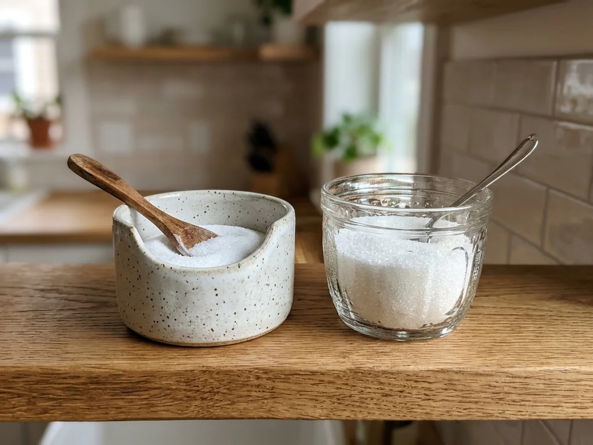
kitchen-5-usage-scene-2
REUSED (82 KB)
Two distinct clear glass spice jars on a wooden kitchen shelf: one ceramic salt cellar with fine white table salt and small wooden spoon, and one glass sugar bowl containing sparkling coarse granulated white sugar with a silver spoon. Clean kitchen background. Strictly human-free composition. Strictly no labels, words, or watermarks. Aspect ratio 4:3.
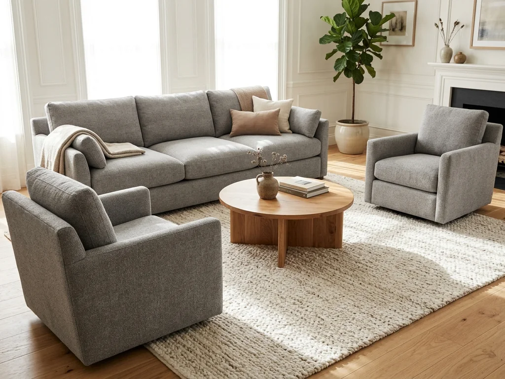
living-room-1-usage-scene-3
REUSED (143 KB)
Elegant living room conversation area: a large three-seater grey upholstered sofa facing two comfortable matching armchairs across a low round wooden coffee table with a small ceramic vase, resting on a soft textured area rug. Bright daylight. Strictly human-free composition. Strictly no text or watermarks. Aspect ratio 4:3.
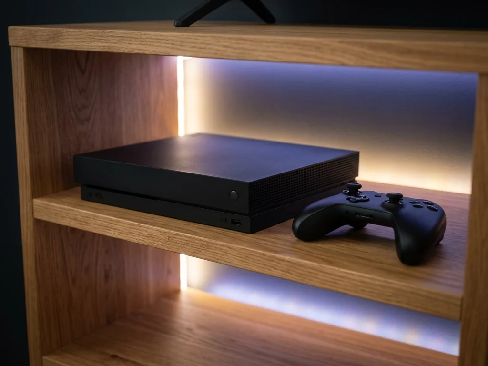
living-room-2-usage-scene-3
REUSED (41 KB)
Modern television media console shelf: a sleek matte black video game console resting horizontally with its matching wireless handheld game controller resting beside it on oak wood, cables hidden neatly. Soft ambient LED backlighting. Strictly human-free composition. Strictly no brand logos, text, or watermarks. Aspect ratio 4:3.
living-room-3-usage-scene-1
REUSED (88 KB)
A tall minimalist brass standing floor lamp with a drum shade, positioned directly beside a large comfortable modern grey fabric sofa, casting a warm reading light onto the corner cushion. Living room interior. Strictly human-free composition. Strictly no text or watermarks. Aspect ratio 4:3.
living-room-4-usage-scene-3
REUSED (81 KB)
A handsome wooden living room credenza sideboard, with a beautifully framed impressionist landscape oil painting securely hung on the neutral wall directly centered above it, with a decorative ceramic bowl on the credenza surface. Strictly human-free composition. Strictly no text, signature, or watermarks. Aspect ratio 4:3.
human-body-head-and-face-1-usage-scene-1
REUSED (55 KB)
A medical clinical consultation setting: a male physician gently examining the crown of the head of an adult male patient, checking the hair scalp layer above the cranium with focused examination light. Clean hospital clinic setting. No women. Strictly no text, charts with writing, words, or watermarks. Aspect ratio 4:3.
human-body-head-and-face-1-usage-scene-2
REUSED (91 KB)
Upscale gentleman's barbershop styling consultation: a male barber holding scissors and comb, carefully gesturing to the side temple and the crown of an adult male client's hair in front of a clean vanity mirror. No women. Strictly no text, logos, or watermarks. Aspect ratio 4:3.
human-body-head-and-face-1-usage-scene-3
REUSED (34 KB)
Official portrait photography studio: a modest adult man sitting upright with neutral expression, head held high with clearly defined jawline, chin, and neck posture against a clean solid light-grey background. Studio umbrella softbox lighting visible. No women. Strictly no text, stamps, numbers, or watermarks. Aspect ratio 4:3.
human-body-head-and-face-1-usage-scene-4
REUSED (65 KB)
Ear-nose-throat medical clinic: a male doctor with penlight inspecting the throat and eye area of an adult male patient sitting in an examination chair. Clean clinical environment. No women. Strictly no text, labels, or watermarks. Aspect ratio 4:3.
human-body-head-and-face-1-usage-scene-5
REUSED (50 KB)
Optometry vision test: a male optometrist using a small penlight to carefully inspect the pupil and eyelid of an adult male patient in a dimly lit examination room. Precision clinical focus. No women. Strictly no text, charts, or watermarks. Aspect ratio 4:3.
shapes-geometry-polygons
REUSED (10 KB)
Clean educational geometric illustration of regular 2D polygons: an equilateral triangle, a square, a regular pentagon, a regular hexagon, and a regular octagon, each cleanly rendered in distinct solid contrasting colors on a clean neutral background. Strictly human-free composition. Strictly no text, letter labels, angle measurements, or watermarks. Aspect ratio 4:3.
shapes-geometry-3d-solids
REUSED (45 KB)
Clean educational geometric illustration of basic 3D solids: a smooth sphere, a cube, a cylinder, a cone, and a square-based pyramid, rendered with subtle architectural shading on a light wooden tabletop. Strictly human-free composition. Strictly no text, labels, or watermarks. Aspect ratio 4:3.
shapes-geometry-circles-ellipses
REUSED (51 KB)
Clean educational graphic demonstration comparing circles and ellipses: perfect concentric circular rings cleanly contrasted beside elongated elliptical shapes with subtle dashed geometric guide axes. Neutral clean background. Strictly human-free composition. Strictly no text, letter labels, or watermarks. Aspect ratio 4:3.
shapes-geometry-parallel-lines
REUSED (15 KB)
Clean architectural graphic demonstration of lines: two perfectly straight parallel rails contrasted clearly with two intersecting perpendicular lines forming a clean 90-degree square corner. Neutral educational background. Strictly human-free composition. Strictly no text, degree numbers, or watermarks. Aspect ratio 4:3.
reading-colors-optics
REUSED (20 KB)
Optical science educational demonstration: a clear glass triangular prism splitting a focused beam of sunlight into a vibrant, clear spectrum of rainbow colors (red, orange, yellow, green, blue, violet) across a clean white surface in a dark studio. Strictly human-free composition. Strictly no text, labels, wavelength numbers, or watermarks. Aspect ratio 4:3.